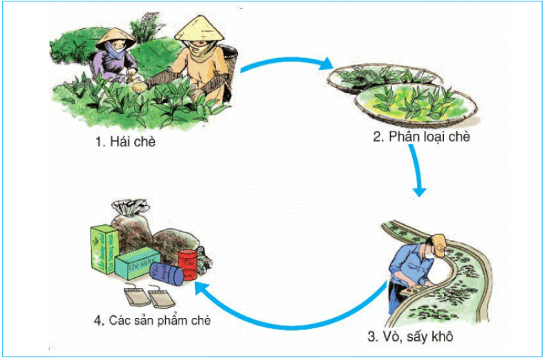
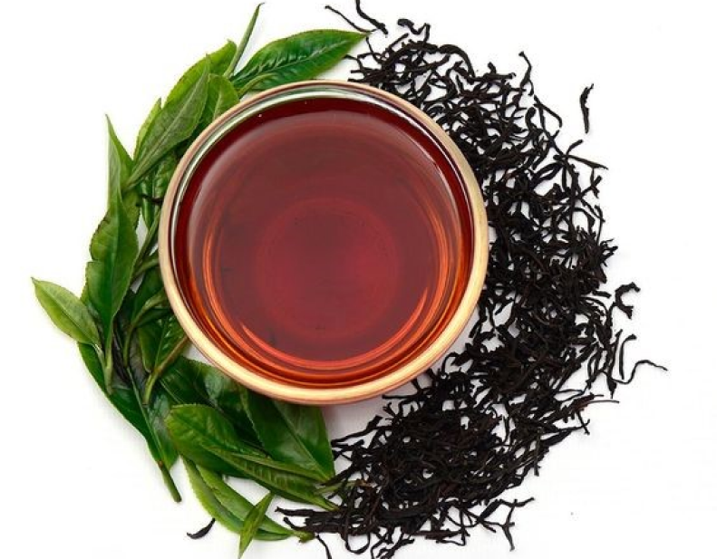

Quy trình làm trà
Quy trình làm trà
Trà Tân Cương Thái Nguyên là một nét độc đáo trong văn hóa trà Việt Nam. Với hương thơm đặc trưng và vị ngọt êm dịu, trà Tân Cương từ lâu đã khẳng định vị thế của mình trong giới trà trong nước và quốc tế. Đằng sau những tách trà thơm ngọt ấy là cả một quy trình sản xuất đầy công phu, tâm huyết.
Bài viết này sẽ đưa bạn khám phá quy trình độc đáo để làm ra loại trà Tân Cương đặc biệt này, từ việc thu hoạch lá trà cho đến quá trình xử lý và chế biến tạo nên hương vị đặc trưng. Hãy cùng nhau bước vào hành trình khám phá sự tinh túy và “chạm” của trà Tân Cương Thái Nguyên nhé!
Mục lục
1. Quy trình sản xuất trà xanh
Ảnh 1:
Quy trình sản xuất trà
Bước 1: Nguyên liệu chế biến trà
Đây là khâu quan trọng đầu tiên trước khi chế biến trà. Người ta sẽ lựa thời điểm trà ngon nhất để hái những búp trà non có 2 – 3 lá và 1 tôm đem về chế biến. Thông thường, sau khi hái xong, sẽ lập tức chế biến ngay để đảm bảo được độ tươi và chất lượng cho trà. Bạn có thể hái trà bằng tay hoặc máy tùy vào quy mô thu hoạch trà của bạn.
Bước 2: Làm héo sơ bộ
Căn cứ vào điều kiện thời tiết người ta sẽ phơi lá trên các máng héo để làm héo sơ bộ trong vòng 4 – 8 tiếng. Để trà héo đều và đạt yêu cầu bạn nên đảo lại 1 lần sau 1 tiếng. Tiếp tục thực hiện cho đến khi nào bạn cảm nhận được lá trà có mùi thơm và màu xanh thẫm.
Bước 3: Sao trà, diệt men bằng máy sao trà
Bước này sẽ tác động đến chất lượng trà, giúp trà giữ được vitamin, catechin, tannin và các chất dinh dưỡng khác. Thực hiện diệt men từ 2 đến 3 phút trong điều kiện nhiệt độ đạt 280 – 300 độ C. Sau quá trình diệt men và thủy phân phải giữ lại hàm lượng nước 62 – 64%. Điều này giúp nước trà được xanh và không bị nát trong những khâu chế biến tiếp theo. Bạn phải có kỹ thuật sao trà và biết cách dùng máy sao trà đúng cách để đạt hiệu quả sản xuất tốt nhất.
Ảnh 2:
Sao trà, diệt men bằng máy sao trà công nghệ tiên tiến nhất
Bước 4: Vò trà bằng máy vò trà
Đây là công đoạn tiếp theo sau giai đoạn sao trà tác động đến hình thức của trà. Tế bào lá trà bị dập khoảng 30 – 35 % thì đạt yêu cầu đặt ra cho công đoạn này. So với cách làm truyền thống thì máy vò trò đảm bảo độ dập cần thiết theo tiêu chuẩn.
Bước 5: Sấy trà bằng máy sấy trà
Sau đó bạn cần cho trà lên giàn sấy ngay sau khi thực hiện xong khâu vò trà. Thông thường, nếu bạn muốn giữ được mùi hương và chất lượng trà được đảm bảo thì độ ẩm của trà phải ở mức 3 – 5% sau khi sấy xong.
Bước 6: Phân loại trà
Để phân loại bạn cần để cho trà nguội để dễ dàng thực hiện hơn. Bạn có thể sàng tay để phân loại trà và căn cứ vào độ vụn nát của trà mà chia thành: trà vón, trà cám, trà bồm, trà búp.
Bước 7. Đóng gói và bảo quản
Ảnh 3:
Đóng gói và bảo quản sản phẩm chè là công đoạn cuối cùng trong quy trình sản xuất trà
2. Quy trình chế biến trà xanh
Ảnh 4:
Trà xanh
Bước 1: Thu hái và lựa chọn nguyên liệu
Trà xanh chế biến từ những búp trà tươi được thu hái cẩn thận và lựa chọn kỹ lưỡng theo từng loại trà. Khi hái phải lưu ý nhẹ tay, tránh tổn thương đến lá trà.
Bước 2: Làm héo là trà
Sau khi hái xong đem lá trà đi phơi trong phòng thông thoáng để loại bỏ khí nóng ẩm và sương khi vận chuyển. Khoảng 1 tiếng thì đảo trà một lần, làm nhẹ tay tránh nát trà. Khi lá trà có màu xanh thẫm và thơm thì tiến hành thực hiện bước tiếp theo.
Bước 3: Tiến hành ốp trà và diệt men trà
Bỏ lá trà đã làm héo vào tôn quay để diệt men và ốp trà. Thực hiện đến khi nào thấy lá mềm dẻo, hơi dính lại, có màu xanh sẫm, kèm theo đó là cuống nón bẻ gập lại và mùi thơm nhè nhẹ thì dừng lại.
Bước 4: Vò trà
Bạn có thể vò những cành trà còn sót lại hoặc cho vào máy vò trà để thực hiện quy trình vò. Yêu cầu khi vò trà là cánh trà phải cong, khô, đẹp và gọn. Thông thường, bước này thực hiện tầm 10 – 30 phút.
Bước 5: Sao trà
Ảnh 5:
Quy trình sản xuất trà xanh vô cùng tỉ mỉ và cẩn thận đem đến chất lượng trà hảo hạng
Giai đoạn này tác động đến màu sắc và mùi vị của trà sau khi khô. Khi tôn đủ độ nóng sẽ cho trà vào để sao. Bạn nên điều chỉnh nhiệt độ thích hợp và bỏ vụn cám để trà đạt chất lượng về mẫu mã và hương thơm. Tầm 20 phút sẽ sao khô được khoảng 1,2 đến 1,5 kg.
Bước 6: Tiến hành lên hương trà
Khi sao khô trà xong thì loại bỏ những cám, lá và cuống già. Sau đó cho vào quay tiếp đạt được yêu cầu tiêu chuẩn về hương thơm sẽ dừng lại.
Bước 7: Đóng gói và bảo quản trà
Trà được cho vào túi kín, để ở nơi khô ráo, tránh sự tác động trực tiếp của ánh nắng. Sử dụng máy hút chân không để bảo quản hương thơm và chất lượng trà tốt nhất.
3. Quy trình sản xuất trà đen
Ảnh 6:
Quy trình sản xuất trà đen khá cầu kỳ đòi hỏi bạn phải tỉ mỉ trong từng khâu thì chất lượng trà mới đảm bảo.
Bước 1: Chuẩn bị nguyên liệu
Búp trà cũng được lựa chọn kỹ và thực hiện đúng các kỹ thuật thu hoạch để có được những búp trà đặc biệt đạt chuẩn.
Bước 2: Tiến hành làm héo
Lá trà cần giảm được 38 – 40 % nước sau khi làm héo, giúp quá trình vò đạt hiệu quả hơn. Khi làm héo xong lá trà sẽ dẻo dai, chất trà đậm đặc và đạt chuẩn về chất lượng. Thời gian để lá trà đen đảm bảo yêu cầu khi làm héo khoảng 3 – 4 giờ, trong điều kiện nhiệt độ khoảng 44 – 45 độ C và không khí có độ ẩm đạt 60%.
Bước 3: Vò lá trà
Với nhiệt độ 22 – 24 độ C, độ ẩm không khí tầm 90 – 92 % bạn có thể thực hiện công đoạn vò cho lá trà đen trong vòng 45 phút. Khâu này được thực hiện chuẩn xác để đảm bảo các chất dinh dưỡng dễ dàng hòa tan khi pha trà. Phần trà sẽ được tách nhỏ với độ dập tế bào vừa phải thuận lợi cho các khâu khác trong quy trình sản xuất trà.
Bước 4: Lên men trà
Quá trình này tác động tích cực đến hình dáng, mùi vị và màu sắc của trà. Thông thường, quá trình lên men của trà đen được chia làm 2 giai đoạn cụ thể: giai đoạn vò lần 1, giai đoạn bắt đầu đưa trà lên men đến khi thực hiện xong. Nhiệt độ thích hợp cho quá trình lên men là từ 24 – 26 độ C, đạt 95 – 98 % độ ẩm không khí
Bước 5: Giai đoạn sấy
Công đoạn này giúp cố định màu sắc, hương vị và ngoại hình của trà, lượng nước cần thiết còn lại của trà khoảng 7 – 9 %. Nhiệt độ sấy phải cao từ 95 – 100 độ C, tiến hành sấy từ 30 – 40 phút. Đến đây thì quá trình chế biến trà đen cơ bản đã hoàn thành.
Ảnh 7:
Quy trình sản xuất trà đen đạt tiêu chuẩn đem đến những sản phẩm trà chất lượng, và nhiều công dụng tốt cho sức khoẻ người thưởng thức.
Bước 6: Tiến hành sàng trà để phân loại và kiểm tra chất lượng
Đây là bước quan trọng để kiểm soát chất lượng của sản phẩm tạo ra.
Bước 7: Đóng gói thành phẩm và bảo quản /p>
Cũng tương tự như quy trình sản xuất trà xanh, đóng gói sản phẩm trà đen cũng được thực hiện cẩn thận và bảo quản ở điều kiện thích hợp.
4. Quy trình sản xuất trà ô long

Ảnh 8:
Quy trình sản xuất trà ô long cũng tuân thủ theo những bước chặt chẽ sau đây
Bước 1: Thu hoạch và phơi trà khô ráo.
Thu hoạch những búp trà với 2 – 3 lá non và 1 tôm. Từng lá trà cũng được lựa chọn kỹ, có màu sắc và mùi hương đặc trưng. Để tránh dập nát bạn cần phơi lá trà ở nơi thông thoáng và nhanh chóng đưa đến nơi chế biến để thực hiện các công đoạn tiếp theo.
Bước 2: Làm héo lá trà
Lá trà ô long cần được làm héo mát và héo nắng để giữ được hương vị thơm ngon. Ánh nắng mặt trời sẽ làm trà bay hơi sương và giảm lượng nước. Tạo điều kiện cho quá trình diệt men và hình thành hương thơm. Còn làm héo mát thì được thực hiện sau làm héo nắng giúp trà có hậu ngọt, không bị chát đắng
Bước 3: Lên men
Công đoạn này bạn cần tăng quá trình oxy hóa cho lá trà bằng cách tạo điều kiện tiếp xúc với không khí, thúc đẩy quá trình lên men tự nhiên hiệu quả. Khi thực hiện công đoạn này bạn nên để yên không được đảo trà như các công đoạn khác. Điều này, giúp trà có màu sắc và hương thơm đặc trưng, đạt chuẩn nhiều người yêu thích của trà ô long.
Bước 4. Sao trà kỹ lưỡng
Khâu này khá quan trọng để tạo ra màu xanh tươi, diệt men đạt hiệu quả khi thực hiện nhanh chóng. Sau khi xao trà kỹ lưỡng thì độ ẩm của trà giảm xuống và các hoạt tính enzim thì bị phá vỡ.
Ảnh 9:
Quy trình sản xuất chè ô long đạt chất lượng sẽ đem đến những sản phẩm thơm ngon và giàu dinh dưỡng
Bước 5. Thực hiện vò chuông và sấy dẻo
Sử dụng máy vò chất lượng để thực hiện công đoạn này đạt hiệu quả, tăng khả năng ma sát, làm trà mềm. Sau đó thực hiện sấy khô để ổn định đặc điểm hóa học của trà tốt nhất.
Bước 6: Tạo hình trà
Sau khi tạo hình xong trà sẽ có hình dạng vo tròn, kết cấu trà gắn kết nhưng lá trà vẫn có độ mềm nhất định. Công đoạn này có sự hỗ trợ của máy ép để ép, sấy nóng và đánh tơi lên.
Bước 7: Sấy định hương
Sấy trà ở nhiệt độ 100 – 105 độ C. Các chất có trong trà và hương vị sẽ được lưu giữ lại lâu hơn trong quá trình sử dụng và bảo quản.
Bước 8: Thành phẩm
Tiến hành kiểm tra và phân loại sản phẩm. Sau đó sẽ chuyển đi đóng gói và bảo quản đúng cách theo yêu cầu.
5. Quy trình sản xuất trà túi lọc
Ảnh 10:
Trà túi lọc
Bước 1: Chuẩn bị nguyên liệu
Hái những búp trà non vào bất kỳ vụ trà nào cũng được. Bạn cần thực hiện các khâu khác tỉ mỉ hơn nếu thu hoạch vào giữa vụ để vị trà được ngon, ngọt và thơm hơn.
Bước 2: Làm héo
Nhằm tạo điều kiện thuận lợi cho quá trình lên men và chất lượng trà như các quy trình sản xuất của các loại trà khác.
Bước 3: Thực hiện công đoạn cắt, vò, nghiền trà
Đây là công đoạn làm dập tế bào trà, để quá trình lên men đồng bộ giúp phát huy các đặc tính của trà về màu sắc và mùi vị. Sử dụng thiết bị thùng quay có chế độ sàng để sàng xơ, những phần trà không lọt sàng sẽ được đưa trở lại để vò và nghiền. Nghiền trà đến khi đạt kích thước vụn khoảng 1,4 mm thì dừng lại.
Ảnh 11:
Trà túi lọc là sản phẩm rất quen thuộc đối với hầu hết chúng ta vì mang đến tính tiện lợi khá cao
Bước 4: Lên men đồng đều
Thực hiện tốt các khâu trên giúp cho quá trình lên men đồng đều và hiệu quả. Đây là giai đoạn tiếp tục hoàn thành quá trình phản ứng oxy hóa lên men.
Bước 5: Tiến hành làm khô
Công đoạn cần thực hiện 2 lần: lần 1 thực hiện bằng máy sấy băng tải, lần 2 thực hiện bằng máy sấy tầng sôi. Cách làm này giúp ổn định tính chất của trà, giúp trà không bị vón cục. Nhờ quá trình tác động của nhiệt mà tạo ra sự chuyển hóa tích cực cho các chất dinh dưỡng trong trà. Trà có màu sắc đậm, nhạt; mùi vị chát hay ngọt; thơm nhiều hay ít sẽ phụ thuộc vào mức độ chuyển hóa này.
Bước 6: Ướp hương
Khâu này giúp túi trà có mùi hương đặc trưng, có nhiều tác dụng tốt đến tinh thần và sức khỏe người tiêu dùng. Bạn có thể sử dụng những hương liệu có sẵn như: hoa sen, hoa nhài,.. để trộn vào theo tỉ lệ ướp hợp lý.
Bước 7: Đóng gói
Trà được đóng vào những gói với công nghệ gấp hiện đại, có giấy lọc, khả năng thẩm thấu tốt, an toàn cho sức khỏe con người.
Kết thúc
Quy trình làm trà Tân Cương không chỉ tập trung vào việc thu hoạch và xử lý lá trà mà còn yêu cầu sự chăm sóc từ các nông dân, những người có nhiều kinh nghiệm và tâm huyết với nghề trà. Từ việc chọn lọc lá trà tốt nhất cho đến quá trình sấy khô và đóng gói, mọi công đoạn đều được thực hiện với cẩn thận và tỉ mỉ.
Với hương vị độc đáo và phẩm chất cao, trà Tân Cương đã ghi dấu ấn trong lòng người yêu trà trên khắp thế giới. Đây không chỉ là một thức uống quen thuộc, mà còn là một phần của nền văn hóa truyền thống và sự kiêu sa của Thái Nguyên.
Mỗi tách trà Tân Cương mang trong mình hương thơm tự nhiên của vùng đất Thái Nguyên và tâm huyết của những người làm trà. Đó chính là bí quyết để trà Tân Cương không chỉ là một loại trà phổ biến, mà còn là một trải nghiệm tinh tế và đáng để khám phá.
Hãy cùng thưởng thức một tách trà Tân Cương Thái Nguyên và khám phá sự độc đáo và hấp dẫn của hương vị này, để cảm nhận được sức sống và truyền thống của một loại trà đặc biệt trong trái tim Việt Nam.
Đọc thêm
Thông tin liên lạc
Km10, Nguyễn Trãi, Tân Cương, Thái Nguyên
0123 456 789
Sacluctancuong@gmail.com